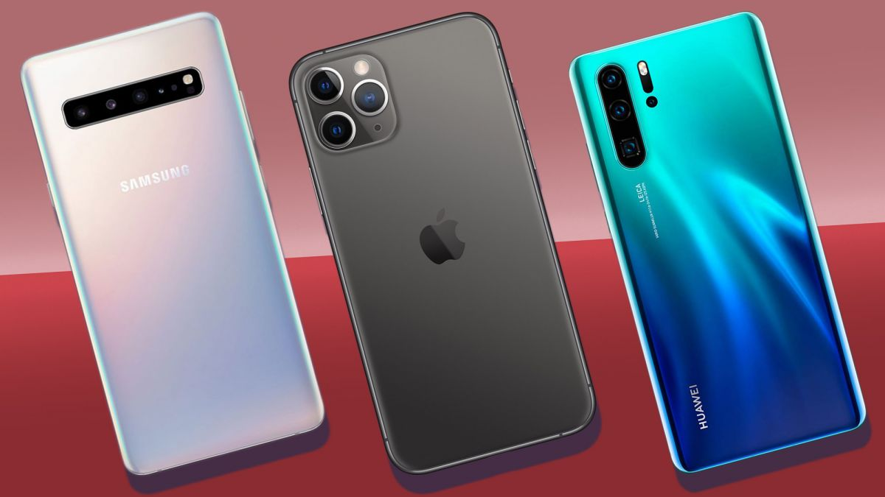

In ziua de azi, putine obiecte au devenit atat de utile precum un smartphone. Atunci cand vrei sa iti schimbi telefonul, ai trei mari optiuni, in functie de sistemul de operare: iOS, Android si Windows Phone. O problema destul de spinoasa, cand te gandesti ca se apropie Black Friday si in ziua respectiva chiar nu prea ai timp sa meditezi la alegerea potrivita.
In privinta iPhone, lucrurile sunt relativ simple, pentru ca ai doar cateva modele din care sa alegi. Nu vrei sa dai o caruta de bani pentru iPhone 5S sau 5C? Nicio problema! Alegi iPhone 5 si te-ai rezolvat. Daca iti place interfata Windows Phone, alegerile sunt si ele destul de putine. Insa marea problema apare in cazul Android, unde chiar si o lista scurta cuprinde zeci de modele, fara sa mai includem telefoanele cu tastatura. Deci, cum sa-ti alegi telefonul potrivit?
E poate primul lucru pe care sa-l iei in calcul. Fiecare OS are avantaje si dezavantaje si o alegere gresita te poate face sa regreti mult timp. Daca vrei un telefon relativ simplu, care sa se miste bine si sa nu-ti dea multe batai de cap cu setarile sau posibilitatile de personalizare, alege un iPhone. Cel mai mare dezavantaj e insa pretul. In schimb, daca iti place designul interfetei Metro si vrei sa fii putin altfel, incearca Windows Phone.
Am lasat Android la urma pentru ca se adreseaza atat celor care nu au un buget foarte mare cat si celor mai geek dintre noi. Fragmentarea Android in schimb poate pune ceva probleme. Daca nu alegi un Nexus, ai ceva de asteptat pana sa primesti un update, si in general majoritatea telefoanelor nu primesc mai mult de doua actualizari. In plus, chiar si varfurile de gama se mai confrunta cu momente in care au lag si se misca precum o broasca testoasa. Nu mai vorbim de telefoanele low-end. Insa Android mai are un avantaj. Daca nu-ti convine ROM-ul instalat de producator, il poti schimba oricand cu un ROM custom. Sau ti-l poti crea singur, daca te pricepi.
Sa fim sinceri. De la iPhone incoace, cam toate telefoanele arata la fel. Detaliile fac diferenta si aici ne referim nu doar la marimea acestora ci si la modul in care le poti tine in mana sau cum se simt atunci cand vorbesti la ele. Aici, pozele nu sunt suficiente. Iti recomandam sa testezi telefonul ca sa vezi exact cat de bine poti sa il tii, cat de confortabil este, daca pare indeajuns de rezistent la zgarieturi si socuri sau cat de bine sta in buzunar (Nu incerca totusi sa bagi telefonul in buzunar fara a cere acordul vanzatorului. Doar nu vrei sa ai probleme cu Politia!).
Tot in aceasta categorie intra husele si foliile de protectie. Daca te stii cu musca pe caciula, sau pur si simplu vrei sa stai linistit, trebuie sa te gandesti la o husa. Vin intr-o multitudine de forme specifice, fiecare cu rolul sau. Deci, intereseaza-te si de acest aspect. Pentru ca e posibil sa gasesti un telefon frumos, pentru care sa nu fie disponibila nicio husa de bun simt.
Marimea ecranului e la fel ed importanta ca si design-ul. Stai mult pe net? Stii toate filmele de pe Youtube, sau iti place sa vezi materiale video? Atunci alege un telefon de 4 inch (iPhone 5S) sau mai mare. Dimensiunile de 4,5 inch (precum cea a noului Moto G), 4,7 sau chiar 5 inch sunt cele mai potrivite. Daca treci de 5,2 inch, ia in considerare faptul ca va trebui sa operezi telefonul cu ambele maini.
In schimb, daca preferi un smartphone pe care sa-l folosesti mai mult pentru sunat, mesaje, mailuri si ocazional ceva browsing, sau daca vrei sa profiti de Black Friday pentru a-l face cadou cuiva drag, poti alege linistit un model cu dimensiunea ecranului egala sau mai mica de 4 inch.
Acorda o atentie deosebita camerei, daca planuiesti sa faci multe poze cu telefonul. Pentru smartphone-urile mid-range sau chiar high-end, o camera de 8 MP e aproape standard. Cu toate astea, un numar mare de megapixeli nu inseamna neaparat ca va avea si o camera buna, de vreme ce marimea senzorului e cea care conteaza cu adevarat. Multi producatori inghesuie megapixelii pe un senzor mic, ceea ce nu duce decat la mult noise.Tot aici trebuie sa vorbim si de posibilitatile de a filma. Majoritatea telefoanelor mai scumpe pot filma full HD 1080p sau la rezolutii de 720p. Daca filmarile conteaza mult pentru tine, atunci asigura-te ca iti iei un telefon care face fata. Si nu am terminat inca. A mai ramas si camera frontala. E folosita mai mult pentru apeluri video sau sa-ti faci singur poze. Nu e atat de importanta, insa, daca folosesti intensiv aplicatii pentru apeluri video, vei dori una cu multi megapixeli si posibilitatea de a filma HD.
Ai atat de multe variante incat am putea umple cateva pagini vorbind numai despre procesoare. Un singur core e suficient pentru un smartphone ieftin, dar nu te astepta la cine stie ce performante. Majoritatea telefoanelor se vor descurca bine si cu un procesor dual-core (Alege un A9, eventual, sau echivalent). O alegere si mai buna ar fi sa gasesti un smartphone cu procesor quad-core (Atentie insa, un dual-core Cortex A9 se poate descurca mai bine decat un quad-core Cortex A7). iPhone 5S foloseste arhitectura pe 64 de biti. E o diferenta mare, insa va fi vizibila si dupa ce dezvoltatorii isi vor adapta aplicatiile. Pentru mai multe detalii, poti vedea cum se descurca telefonul tau in benchmark-uri.
Am ajuns la problema care ne doare pe toti. Pentru ca e din ce in ce mai greu sa gasesti un telefon care sa tina de dimineata pana seara, fiind folosit normal. In general, un telefon cu display mare te va tine mai putin. Un telefon performant te va tine si el mai putin, mai ales ca vei fi tentat sa il folosesti intensiv. Deocamdata singurele rezolvari sunt incarcatoarele tinute la indemana sau modurile in care sa optimizezi folosirea bateriei.